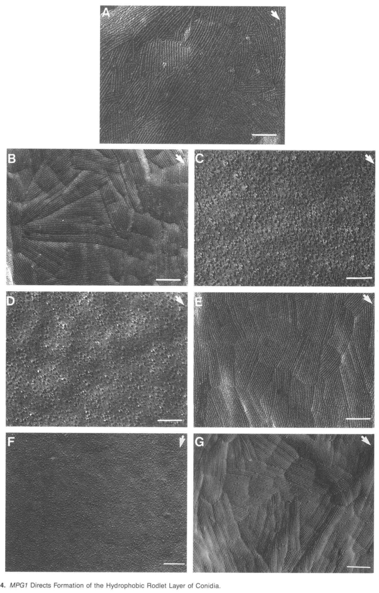

MPG1 is a small (112 aa precursor) secreted, cysteine-rich class I hydrophobin of the rice blast fungus Magnaporthe oryzae (Pyricularia oryzae). After removal of its signal peptide and formation of four intramolecular disulphide bonds, which are required for secretion but not for aggregation, the protein is exported to the cell surface. At hydrophobic:hydrophilic interfaces it self-assembles into functional amyloid rodlets that associate laterally into an amphipathic monolayer; in vivo this forms the interwoven ~5 nm rodlet layer of the conidial wall and also coats aerial hyphae and appressoria, conferring surface hydrophobicity (mpg1 mutants are "easily wettable"). MPG1 is strongly expressed during conidiation, nutrient starvation, appressorium formation and lesion development. Loss of MPG1 reduces conidiation, weakens SDS-resistant attachment of germlings to hydrophobic surfaces, and lowers the efficiency of appressorium induction on host and highly hydrophobic surfaces (a defect rescued by exogenous cAMP or by co-inoculation with wild-type spores), resulting in reduced virulence on rice. The assembled coat is thought to mediate recognition of the hydrophobic host surface, and in vitro MPG1 rodlet coatings retain active cutinase 2 on hydrophobic surfaces. MPG1 has no known enzymatic activity.
| GO Term | Evidence | Action | Reason |
|---|---|---|---|
|
GO:0005199
structural constituent of cell wall
|
IEA
GO_REF:0000002 |
ACCEPT |
Summary: InterPro2GO mapping from the class I hydrophobin domain. MPG1 self-assembles into amyloid rodlets that form the outermost hydrophobic rodlet layer of the conidial wall; this is a structural, non-catalytic contribution to the fungal cell surface.
Reason: The rodlet layer on conidia depends on MPG1 and is composed of MPG1-type class I hydrophobin rodlets (PMID:12239409; PMID:27142249). Structural constituent of cell wall is the standard and appropriate MF for class I hydrophobins (the same mapping is applied to A. fumigatus and A. nidulans RodA and S. commune SC3), and there is no more specific MF term for rodlet-forming hydrophobins. This is the core molecular function.
Supporting Evidence:
PMID:12239409
Ultrastructural studies revealed that MPG1 directs formation of a rodlet layer on conidia composed of interwoven ~5-nm rodlets, which contributes to their surface hydrophobicity.
PMID:27142249
The spores of M. oryzae are covered with a layer composed of the hydrophobin MPG1 and the protein is also present in appressoria
PMID:27142249
We show that MPG1 self-assembly into functional amyloid rodlets is strictly limited to a hydrophobic:hydrophilic interface.
|
|
GO:0005576
extracellular region
|
EXP
PMID:12239409 MPG1 Encodes a Fungal Hydrophobin Involved in Surface Intera... |
ACCEPT |
Summary: Talbot et al. 1996 identified a 15-kD secreted MPG1-dependent protein with class I hydrophobin properties.
Reason: Directly supported: the protein is secreted (signal peptide; recovered from the extracellular milieu and the conidial surface). Fungal-type cell wall/spore wall are more specific locations for the assembled form, but secretion to the extracellular region is correct and experimentally grounded.
Supporting Evidence:
PMID:12239409
we identified a 15-kD secreted protein with characteristics that establish it as a class I hydrophobin.
|
|
GO:0005576
extracellular region
|
EXP
PMID:15773983 Four conserved intramolecular disulphide linkages are requir... |
ACCEPT |
Summary: Kershaw et al. 2005 showed by immunolocalization that wild-type Mpg1 is secreted to the cell surface whereas cysteine-to-alanine variants self-assemble but are not secreted.
Reason: Immunolocalization of wild-type versus disulphide-deficient variants directly establishes secretion of MPG1 to the cell surface. Abstract-only cache, but the abstract states the localization result explicitly.
Supporting Evidence:
PMID:15773983
Immunolocalization revealed that Mpg1 hydrophobin variants, lacking intact disulphide bonds, retain the capacity to self-assemble, but are not secreted to the cell surface.
|
|
GO:0005576
extracellular region
|
IEA
GO_REF:0000120 |
ACCEPT |
Summary: Automated mapping from UniProt subcellular location "Secreted".
Reason: Consistent with the experimental EXP annotations (PMID:12239409, PMID:15773983); redundant but correct.
Supporting Evidence:
PMID:12239409
we identified a 15-kD secreted protein with characteristics that establish it as a class I hydrophobin.
|
|
GO:0009277
fungal-type cell wall
|
IEA
GO_REF:0000002 |
ACCEPT |
Summary: InterPro2GO mapping from the class I hydrophobin domain. Assembled MPG1 forms the outer rodlet layer of the conidial wall and coats aerial hyphae and appressoria.
Reason: Supported for MPG1 specifically: the 2005 study concerns secretion and cell wall localization of Mpg1, and the conidial rodlet layer depends on MPG1. The more specific spore wall location is proposed separately as NEW.
Supporting Evidence:
PMID:15773983
Four conserved intramolecular disulphide linkages are required for secretion and cell wall localization of a hydrophobin during fungal morphogenesis.
PMID:12239409
MPG1 directs formation of a rodlet layer on conidia composed of interwoven ~5-nm rodlets
|
|
GO:0031160
spore wall
|
IDA
PMID:12239409 MPG1 Encodes a Fungal Hydrophobin Involved in Surface Intera... |
NEW |
Summary: MPG1 forms the rodlet layer covering conidia; loss of MPG1 abolishes the conidial rodlet layer and complementation restores it.
Reason: The conidium is the best-documented in vivo site of assembled MPG1. Comparator check: the orthologous-role class I hydrophobins A. fumigatus RodA (P41746) and A. nidulans RodA (P28346) both carry GO:0031160 spore wall by EXP/IDA, so this is the GO convention for conidial rodlet hydrophobins rather than a novel claim.
Supporting Evidence:
PMID:12239409
Ultrastructural studies revealed that MPG1 directs formation of a rodlet layer on conidia composed of interwoven ~5-nm rodlets, which contributes to their surface hydrophobicity.
PMID:27142249
The spores of M. oryzae are covered with a layer composed of the hydrophobin MPG1
|
|
GO:0042243
asexual spore wall assembly
|
IMP
PMID:12239409 MPG1 Encodes a Fungal Hydrophobin Involved in Surface Intera... |
NEW |
Summary: MPG1 is itself the self-assembling building block of the conidial rodlet layer; the layer is absent in mpg1 mutants and restored by complementation.
Reason: Participation test: MPG1 does the work of this assembly step - it is the structural subunit that self-assembles into amyloid rodlets at the hydrophobic:hydrophilic interface (PMID:27142249), not merely a regulator required for it. Comparator check: A. nidulans RodA (P28346) carries GO:0042243 asexual spore wall assembly by IMP for the equivalent rodlet-layer defect. Broader process terms suggested by mutant phenotypes (conidium formation, appressorium formation, pathogenesis) are deliberately not proposed, as they rest on necessity evidence only.
Supporting Evidence:
PMID:12239409
Ultrastructural studies revealed that MPG1 directs formation of a rodlet layer on conidia composed of interwoven ~5-nm rodlets
PMID:27142249
We show that MPG1 self-assembly into functional amyloid rodlets is strictly limited to a hydrophobic:hydrophilic interface.
file:PYRO7/MPG1/MPG1-deep-research-falcon.md
Loss-and-rescue ultrastructure establishes MPG1 as a determinant of the hydrophobic conidial rodlet layer.
|
Q: Is the appressorium-induction defect of mpg1 mutants due to MPG1 acting as a surface-sensing signal, or secondarily to impaired adhesion/surface contact of germ tubes? The trans-rescue by co-inoculated wild-type spores and the cAMP bypass are compatible with either; should process terms such as appressorium formation (GO:0075016) be annotated to MPG1 at all, given that only necessity evidence exists?
Q: Does MPG1 recruit or retain cutinase 2 (Cut2) on the rice leaf surface in vivo, or is the in vitro retention of Cut2 activity on MPG1 coatings non-specific?
Q: What are the respective, non-redundant roles of MPG1 and the class II hydrophobin MHP1 in conidial coat assembly and infection?
Experiment: Germling adhesion and appressorium induction assays of mpg1 mutants on surfaces of graded hydrophobicity with and without pre-coating by purified recombinant MPG1 rodlets, to separate a structural/adhesive role from a signalling role.
Experiment: In planta co-localization of tagged MPG1 and Cut2 at the appressorium-leaf interface, and Cut2 activity measurement on leaves inoculated with wild type versus mpg1.
The research report should be a detailed narrative explaining the function, biological processes, and localization of the gene product. Citations should be given for all claims.
You should prioritize authoritative reviews and primary scientific literature when conducting research. You can supplement
this with annotations you find in gene/protein databases, but these can be outdated or inaccurate.
We are specifically interested in the primary function of the gene - for enzymes, what reaction is catalyzed, and what is the substrate specificity? For transporters, what is the substrate? For structural proteins or adapters, what is the broader structural role? For signaling molecules, what is the role in the pathway.
We are interested in where in or outside the cell the gene product carries out its function.
We are also interested in the signaling or biochemical pathways in which the gene functions. We are less interested in broad pleiotropic effects, except where these elucidate the precise role.
Include evidence where possible. We are interested in both experimental evidence as well as inference from structure, evolution, or bioinformatic analysis. Precise studies should be prioritized over high-throughput, where available.
MPG1 is the rice-blast-fungus class I hydrophobin specified in the question, not an identically named enzyme from another organism. The target metadata identify it as MPG1/MGG_10315 from Pyricularia oryzae strain 70-15 (also called Magnaporthe oryzae), with class I hydrophobin domains IPR001338, IPR019778 and PF01185. Historical primary studies call the rice-blast fungus Magnaporthe grisea and independently identify its MPG1 product as a secreted class I hydrophobin. Their experiments principally used the Guy-11 background; the resulting functional annotation is applicable to the identified rice-blast MPG1 but should not be mistaken for direct knockout evidence in 70-15. MHP1 is a distinct hydrophobin, not an alternative name for MPG1. (talbot1996mpg1encodesa pages 1-2, talbot1993identificationandcharacterization pages 8-10, pham2016selfassemblyofmpg1 pages 1-2)
Primary molecular function: MPG1 is a small, secreted surface-active structural protein. At interfaces it self-assembles into an amphipathic, detergent-resistant, amyloid-like rodlet coating. This coating contributes to fungal-surface hydrophobicity and to persistent attachment of germ tubes and developing appressoria to hydrophobic surfaces. MPG1 is not an enzyme or transporter: no reaction, catalytic substrate specificity or transported substrate is established for it. Cutinase 2 (Cut2), discussed below, is a separate enzyme whose activity MPG1 coatings can retain in cell-free experiments. (talbot1996mpg1encodesa pages 1-2, talbot1996mpg1encodesa pages 5-7, pham2016selfassemblyofmpg1 pages 1-2, pham2016selfassemblyofmpg1 pages 6-7)
The 1993 gene sequence predicts a 112-amino-acid precursor with an N-terminal secretion signal and eight cysteines arranged like those of fungal hydrophobins. Subsequent experiments detected an MPG1-dependent approximately 15-kDa protein in culture filtrates and conidial extracts. Its ethanol/SDS insolubility, extraction with trifluoroacetic acid and capacity to form high-molecular-mass complexes establish class I hydrophobin-like behavior. Its apparent gel mass exceeds the sequence-based estimate; glycosylation and anomalous electrophoretic behavior were proposed, not established as a specific modification. These observations place its functional site outside the plasma membrane, on exposed fungal surfaces and at fungal–air, fungal–water or fungal–hydrophobic-substrate interfaces, rather than in a cytosolic pathway. (talbot1993identificationandcharacterization pages 8-10, talbot1996mpg1encodesa pages 7-10, talbot1996mpg1encodesa pages 10-11)
Freeze-fracture electron microscopy gives particularly strong localization evidence: the conidial surface has an interwoven rodlet layer in wild type, lacks it after MPG1 disruption and regains it after genetic complementation. The native conidial rodlets were described as approximately 5 nm in diameter. Thus MPG1 is necessary for normal conidial rodlet-layer architecture, although these images do not establish that every component of the layer is MPG1. The images provide direct visual evidence for this loss-and-rescue result. (talbot1996mpg1encodesa pages 1-2, talbot1996mpg1encodesa media 64dde1ed)
Purified MPG1 further explains how that layer can form. In the 2016 primary biophysical study, MPG1 assembled into Thioflavin-T-positive, amyloid-like rodlets at a hydrophobic–hydrophilic interface, rather than by ordinary bulk-solution fibrillization. Atomic-force microscopy measured films approximately 2.5 ± 0.2 nm high; electron microscopy of the experimental assemblies observed rodlets about 200 nm long and 20 nm wide. These measurements describe different in-vitro preparations and should not be conflated with the approximately 5-nm diameter measured for native conidial rodlets. MPG1 films also changed substrate wettability: a dried coating lowered the water contact angle from approximately 100° to 62° in the reported assay. Interface availability and surface tension strongly affected assembly; MHP1 delayed MPG1 assembly, without demonstrated specific direct MPG1–MHP1 binding. (pham2016selfassemblyofmpg1 pages 4-6, pham2016selfassemblyofmpg1 pages 7-9)
MPG1 is produced at biologically relevant stages: its transcript was approximately 60-fold more abundant during growth in infected rice than in the comparison culture condition, and was observed early during appressorium development, during later symptom formation, in conidiating cultures and following carbon or nitrogen starvation. Expression during multiple stages does not by itself establish a separate biochemical function at each stage. (talbot1993identificationandcharacterization pages 1-2, talbot1993identificationandcharacterization pages 8-10)
The direct infection phenotype is substantial. In the original segregation experiments, mpg1 progeny formed appressoria at 20.25% ± 8.12%, versus 78.55% ± 11.64% for wild-type progeny. They produced 3.4 rather than 12.04 lesions per 5-cm susceptible-rice leaf tip. The mutants also showed reduced conidiation and abnormal surface wettability; reintroducing MPG1 restored major phenotypes. Conidial germination remained close to 100% in the subsequent adhesion experiments, indicating that the appressorium defect is not simply failure to germinate. These are genotype-specific experimental results, not universal estimates across cultivars or fungal strains. (talbot1996mpg1encodesa pages 1-2, talbot1996mpg1encodesa pages 10-11, talbot1996mpg1encodesa pages 5-7)
Adhesion is separable from developmental induction. After sequential ethanol and hot-SDS treatment of germlings on Teflon, approximately 73% of mutant conidium–germ-tube combinations detached, versus 33% of wild type. Adding 10 mM cAMP restored mutant appressorium formation to a mean 86.6%, but the resulting appressoria still detached more readily than wild type. MPG1 therefore supplies an extracellular, SDS-resistant contribution to attachment even when the downstream developmental response can be bypassed. An extracellular surface-perception role upstream of a cAMP-responsive step is plausible, but these data do not show direct MPG1 binding to a receptor, activation of adenylate cyclase, phosphorylation of Pmk1, or membership of MPG1 in an intracellular kinase cascade. Contemporary pathway reviews place cAMP–PKA and Pmk1–MAPK in appressorium regulation; they do not convert the proposed MPG1-to-kinase connection into a demonstrated molecular interaction. (talbot1996mpg1encodesa pages 5-7, talbot1996mpg1encodesa pages 7-10, wang2024keytranscriptionfactors pages 9-12, tan2023thedevastatingrice pages 9-11)
A related biochemical scaffold hypothesis has more specific, but still cell-free, support. When hydrophobic graphite was coated with MPG1 rodlets, incubated with fungal Cut2 and washed extensively, the coating retained more active Cut2 than comparator coatings or bare substrate; reported activity ranked MPG1 > MHP1 > lysozyme > BSA. MPG1 may therefore help concentrate or preserve cutinase activity at a plant-contact interface. Because other proteins also enhanced Cut2 activity and the experiment used artificial surfaces, specific recruitment of Cut2 by MPG1 on an infected rice leaf and a resulting MPG1-dependent cuticle-hydrolysis reaction remain unproven. The catalytic esterase belongs to Cut2, not MPG1. (pham2016selfassemblyofmpg1 pages 1-2, pham2016selfassemblyofmpg1 pages 6-7, pham2016selfassemblyofmpg1 pages 14-15)
The following evidence summary separates the measurements that establish the annotation from proposed extensions of the mechanism.
| Experimental question | Observation/control | Inference | Boundary |
|---|---|---|---|
| Is MPG1 induced during rice infection? | MPG1 transcript was approximately 60-fold more abundant during fungal growth in rice than in culture; expression was strongest early during appressorium formation and was also detected during symptom development, conidiation, and carbon or nitrogen starvation. (talbot1993identificationandcharacterization pages 1-2, talbot1993identificationandcharacterization pages 8-10) | MPG1 is transcriptionally coupled to infection-related development, sporulation, and nutrient limitation. | Expression correlation alone does not identify the protein’s molecular action or prove that a plant-specific signal induces it. |
| Is MPG1 required for appressorium formation? | Wild-type progeny formed appressoria at 78.55% ± 11.64%, versus 20.25% ± 8.12% for mpg1 mutants; reintroduction of MPG1 restored the phenotype. (talbot1996mpg1encodesa pages 1-2) | Genetic loss and complementation establish that MPG1 promotes efficient appressorium development. | Germination remained close to 100%, so the phenotype is developmental rather than a general failure to germinate; the measurements used the historical Guy-11 background, not strain 70-15. |
| Does MPG1 contribute to rice pathogenicity? | On susceptible rice, wild-type progeny produced 12.04 lesions per 5-cm leaf tip, compared with 3.4 for mpg1 progeny (P < 0.001); complementation restored pathogenicity. (talbot1996mpg1encodesa pages 1-2) | MPG1 is required for full lesion-forming capacity, consistent with its prepenetration role. | Residual lesions show that deletion attenuates rather than invariably abolishes infection; lesion reduction does not identify a catalytic reaction. |
| Does MPG1 support adhesion independently of appressorium frequency? | After 60% ethanol followed by boiling in 2% SDS, 73% of mutant conidium–germ-tube combinations detached, versus 33% for wild type; the difference cosegregated with MPG1 and was corrected by complementation. (talbot1996mpg1encodesa pages 5-7) | An MPG1-dependent, SDS-resistant extracellular component strengthens attachment to a hydrophobic surface. | Water-flow assays did not distinguish the strains, indicating redundant attachment mechanisms; the result is from artificial Teflon and extraction conditions. |
| Is the developmental defect linked to cAMP signaling, and is adhesion separable from morphogenesis? | Addition of 10 mM cAMP restored mutant appressorium formation to a mean of 86.6%, but mutant appressoria remained more readily removed by SDS than wild type. (talbot1996mpg1encodesa pages 7-10) | cAMP can bypass the morphogenetic defect, whereas MPG1-dependent adhesion cannot; MPG1 likely acts at or upstream of cAMP-responsive development while also serving an extracellular structural function. | This epistasis does not demonstrate that MPG1 directly activates adenylate cyclase, cAMP–PKA, or Pmk1 MAPK. (wang2024keytranscriptionfactors pages 9-12) |
| Does MPG1 construct the conidial rodlet coat? | Freeze-fracture electron microscopy showed a conidial rodlet layer in wild type, its absence in an mpg1 knockout, and restoration in an MPG1-complemented strain; the interwoven rodlets were approximately 5 nm in diameter. (talbot1996mpg1encodesa pages 1-2, talbot1996mpg1encodesa media 64dde1ed) | Loss-and-rescue ultrastructure establishes MPG1 as a determinant of the hydrophobic conidial rodlet layer. | The experiment demonstrates dependence of rodlet-layer formation on MPG1 but does not prove that every rodlet consists exclusively of MPG1. |
| Does purified MPG1 alter wettability and form amyloid-like interfacial rodlets? | A dried MPG1 coating reduced the water contact angle on a hydrophobic substrate from approximately 100° to 62°. AFM detected lateral rodlets 2.5 ± 0.2 nm high; assembly was Thioflavin-T positive and required a hydrophobic–hydrophilic interface. (pham2016selfassemblyofmpg1 pages 4-6) | MPG1 is a surface-active class I hydrophobin that self-assembles into amphipathic, amyloid-like rodlet films rather than functioning as an enzyme. | These are purified-protein, cell-free assays; they do not directly establish identical dimensions or assembly kinetics on living rice leaves. |
| Can an MPG1 coating organize cutinase activity at a surface? | On hydrophobic graphite, MPG1 rodlet coatings retained catalytically active Cut2 after extensive washing more effectively than MHP1, lysozyme, BSA, or bare graphite; activity ranked MPG1 > MHP1 > lysozyme > BSA. (pham2016selfassemblyofmpg1 pages 1-2, pham2016selfassemblyofmpg1 pages 6-7, pham2016selfassemblyofmpg1 pages 14-15) | MPG1 may act as an extracellular scaffold that localizes or preserves Cut2 activity at the fungus–plant interface. | The assay was cell-free, and Cut2 stimulation was not sequence-specific; direct MPG1-dependent concentration of Cut2 on infected leaves remains unproven. |
| Is there recent evidence for transcriptional regulation and phenotypic sufficiency? | In a January 2024 non-peer-reviewed preprint, deletion of MoMYB13 strongly reduced MPG1 expression; MPG1 overexpression restored colony non-wettability but did not restore conidiation or rice pathogenicity. (li2024characterizationofa pages 8-10) | MPG1 is sufficient to recover hydrophobic surface character in that regulatory mutant but insufficient to replace the broader program controlled by MoMyb13. | The result is preliminary because the cited version is an unreviewed preprint; it does not alter the established annotation of MPG1 as an extracellular structural class I hydrophobin. |
Table: Gene-specific evidence for the rice-blast MPG1 class I hydrophobin, separating direct genetic and biochemical observations from mechanistic inference. The table also identifies strain, assay, and publication-status limitations.
A 2023 review of genes tested by mutant analysis includes MPG1 among secreted proteins that contribute to fungal development and pathogenicity, consistent with the primary knockout studies. A 2024 review of rice-blast transcriptional and signaling control emphasizes that hydrophobic-surface cues feed into cAMP–PKA- and Pmk1-dependent appressorium development. These are useful contemporary syntheses, but the highest-resolution MPG1-specific molecular evidence retrieved remains the earlier genetic and 2016 purified-protein experiments. (tan2023thedevastatingrice pages 7-9, wang2024keytranscriptionfactors pages 9-12)
An additional January 2024 preprint, explicitly marked not peer-reviewed in the retrieved version, reports that loss of the transcription factor MoMyb13 markedly lowers MPG1 expression. Forced MPG1 expression recovered the mutant’s non-wettable colony surface, but did not restore pathogenicity or conidiation. This supports a fairly specific role for MPG1 in surface hydrophobicity while showing that it cannot replace all other MoMyb13-regulated infection functions; it is not proof of direct binding of MoMyb13 to the MPG1 promoter. A journal version was not verified from the retrieved full text, so these observations are identified here as preliminary rather than represented as peer-reviewed findings. (li2024characterizationofa pages 8-10)
For real-world application, MPG1 is an experimentally useful marker and perturbation point for studying rice-blast spore coatings, adhesion and prepenetration infection. Its interfacial self-assembly and capacity to retain Cut2 suggest research opportunities in disrupting fungal surface attachment or designing protein-coated interfaces. Neither the cited MPG1 experiments nor the contemporary reviews establish an MPG1-directed fungicide, field-deployed diagnostic or validated crop-protection intervention; those applications remain prospective. (talbot1996mpg1encodesa pages 1-2, pham2016selfassemblyofmpg1 pages 1-2, tan2023thedevastatingrice pages 7-9)
Recommended functional annotation: Secreted class I hydrophobin; self-assembling extracellular conidial rodlet-coat and hydrophobic-interface protein; promotes surface hydrophobicity and SDS-resistant adhesion of infection structures, thereby supporting appressorium formation and full rice-blast virulence. Annotate its participation in surface-responsive appressorium development as supported by genetics, but label specific receptor/kinase coupling and in-planta Cut2 scaffolding as hypotheses. (talbot1996mpg1encodesa pages 1-2, talbot1996mpg1encodesa pages 5-7, pham2016selfassemblyofmpg1 pages 1-2, wang2024keytranscriptionfactors pages 9-12)
References
(talbot1996mpg1encodesa pages 1-2): N. Talbot, M. J. Kershaw, G. Wakley, O. M. H. Vries, Joseph G. H. Wessels, and J. E. Hamer. Mpg1 encodes a fungal hydrophobin involved in surface interactions during infection-related development of magnaporthe grisea. The Plant cell, 8:985-999, Jun 1996. URL: https://doi.org/10.1105/tpc.8.6.985, doi:10.1105/tpc.8.6.985. This article has 515 citations.
(talbot1993identificationandcharacterization pages 8-10): Nicholas J. Talbot, Daniel J. Ebbole, and John E. Hamer. Identification and characterization of mpg1, a gene involved in pathogenicity from the rice blast fungus magnaporthe grisea. The Plant cell, 5:1575-1590, Nov 1993. URL: https://doi.org/10.1105/tpc.5.11.1575, doi:10.1105/tpc.5.11.1575. This article has 1178 citations.
(pham2016selfassemblyofmpg1 pages 1-2): Chi L. L. Pham, Anthony Rey, Victor Lo, Margaux Soulès, Qin Ren, Georg Meisl, Tuomas P. J. Knowles, Ann H. Kwan, and Margaret Sunde. Self-assembly of mpg1, a hydrophobin protein from the rice blast fungus that forms functional amyloid coatings, occurs by a surface-driven mechanism. Scientific Reports, May 2016. URL: https://doi.org/10.1038/srep25288, doi:10.1038/srep25288. This article has 106 citations and is from a peer-reviewed journal.
(talbot1996mpg1encodesa pages 5-7): N. Talbot, M. J. Kershaw, G. Wakley, O. M. H. Vries, Joseph G. H. Wessels, and J. E. Hamer. Mpg1 encodes a fungal hydrophobin involved in surface interactions during infection-related development of magnaporthe grisea. The Plant cell, 8:985-999, Jun 1996. URL: https://doi.org/10.1105/tpc.8.6.985, doi:10.1105/tpc.8.6.985. This article has 515 citations.
(pham2016selfassemblyofmpg1 pages 6-7): Chi L. L. Pham, Anthony Rey, Victor Lo, Margaux Soulès, Qin Ren, Georg Meisl, Tuomas P. J. Knowles, Ann H. Kwan, and Margaret Sunde. Self-assembly of mpg1, a hydrophobin protein from the rice blast fungus that forms functional amyloid coatings, occurs by a surface-driven mechanism. Scientific Reports, May 2016. URL: https://doi.org/10.1038/srep25288, doi:10.1038/srep25288. This article has 106 citations and is from a peer-reviewed journal.
(talbot1996mpg1encodesa pages 7-10): N. Talbot, M. J. Kershaw, G. Wakley, O. M. H. Vries, Joseph G. H. Wessels, and J. E. Hamer. Mpg1 encodes a fungal hydrophobin involved in surface interactions during infection-related development of magnaporthe grisea. The Plant cell, 8:985-999, Jun 1996. URL: https://doi.org/10.1105/tpc.8.6.985, doi:10.1105/tpc.8.6.985. This article has 515 citations.
(talbot1996mpg1encodesa pages 10-11): N. Talbot, M. J. Kershaw, G. Wakley, O. M. H. Vries, Joseph G. H. Wessels, and J. E. Hamer. Mpg1 encodes a fungal hydrophobin involved in surface interactions during infection-related development of magnaporthe grisea. The Plant cell, 8:985-999, Jun 1996. URL: https://doi.org/10.1105/tpc.8.6.985, doi:10.1105/tpc.8.6.985. This article has 515 citations.
(talbot1996mpg1encodesa media 64dde1ed): N. Talbot, M. J. Kershaw, G. Wakley, O. M. H. Vries, Joseph G. H. Wessels, and J. E. Hamer. Mpg1 encodes a fungal hydrophobin involved in surface interactions during infection-related development of magnaporthe grisea. The Plant cell, 8:985-999, Jun 1996. URL: https://doi.org/10.1105/tpc.8.6.985, doi:10.1105/tpc.8.6.985. This article has 515 citations.
(pham2016selfassemblyofmpg1 pages 4-6): Chi L. L. Pham, Anthony Rey, Victor Lo, Margaux Soulès, Qin Ren, Georg Meisl, Tuomas P. J. Knowles, Ann H. Kwan, and Margaret Sunde. Self-assembly of mpg1, a hydrophobin protein from the rice blast fungus that forms functional amyloid coatings, occurs by a surface-driven mechanism. Scientific Reports, May 2016. URL: https://doi.org/10.1038/srep25288, doi:10.1038/srep25288. This article has 106 citations and is from a peer-reviewed journal.
(pham2016selfassemblyofmpg1 pages 7-9): Chi L. L. Pham, Anthony Rey, Victor Lo, Margaux Soulès, Qin Ren, Georg Meisl, Tuomas P. J. Knowles, Ann H. Kwan, and Margaret Sunde. Self-assembly of mpg1, a hydrophobin protein from the rice blast fungus that forms functional amyloid coatings, occurs by a surface-driven mechanism. Scientific Reports, May 2016. URL: https://doi.org/10.1038/srep25288, doi:10.1038/srep25288. This article has 106 citations and is from a peer-reviewed journal.
(talbot1993identificationandcharacterization pages 1-2): Nicholas J. Talbot, Daniel J. Ebbole, and John E. Hamer. Identification and characterization of mpg1, a gene involved in pathogenicity from the rice blast fungus magnaporthe grisea. The Plant cell, 5:1575-1590, Nov 1993. URL: https://doi.org/10.1105/tpc.5.11.1575, doi:10.1105/tpc.5.11.1575. This article has 1178 citations.
(wang2024keytranscriptionfactors pages 9-12): Qing Wang, Zhicheng Huang, Irshad Ali Khan, Yan Li, Jing Wang, Jiaoyu Wang, Xiao-Hong Liu, Fucheng Lin, and Jianping Lu. Key transcription factors required for outburst of rice blast disease in magnaporthe oryzae. Phytopathology Research, Feb 2024. URL: https://doi.org/10.1186/s42483-024-00225-0, doi:10.1186/s42483-024-00225-0. This article has 27 citations and is from a peer-reviewed journal.
(tan2023thedevastatingrice pages 9-11): Jinyi Tan, Haikun Zhao, Josh Li, Yi-Qing Gong, and Xin Li. The devastating rice blast airborne pathogen magnaporthe oryzae—a review on genes studied with mutant analysis. Pathogens, 12:379, Feb 2023. URL: https://doi.org/10.3390/pathogens12030379, doi:10.3390/pathogens12030379. This article has 57 citations.
(pham2016selfassemblyofmpg1 pages 14-15): Chi L. L. Pham, Anthony Rey, Victor Lo, Margaux Soulès, Qin Ren, Georg Meisl, Tuomas P. J. Knowles, Ann H. Kwan, and Margaret Sunde. Self-assembly of mpg1, a hydrophobin protein from the rice blast fungus that forms functional amyloid coatings, occurs by a surface-driven mechanism. Scientific Reports, May 2016. URL: https://doi.org/10.1038/srep25288, doi:10.1038/srep25288. This article has 106 citations and is from a peer-reviewed journal.
(li2024characterizationofa pages 8-10): Ya Li, Xiuxia Zheng, Mengtian Pei, Mengting Chen, Shengnan Zhang, Chenyu Liang, Luyao Gao, Pin Huang, and Stefan Olsson. Characterization of a myb transcription factor momyb13 reveals its role in growth, conidiation, hydrophobicity and pathogenicity of magnaporthe oryzae. Unknown journal, Jan 2024. URL: https://doi.org/10.20944/preprints202401.0181.v1, doi:10.20944/preprints202401.0181.v1.
(tan2023thedevastatingrice pages 7-9): Jinyi Tan, Haikun Zhao, Josh Li, Yi-Qing Gong, and Xin Li. The devastating rice blast airborne pathogen magnaporthe oryzae—a review on genes studied with mutant analysis. Pathogens, 12:379, Feb 2023. URL: https://doi.org/10.3390/pathogens12030379, doi:10.3390/pathogens12030379. This article has 57 citations.
(tanaka2021cellwall–associatedeffectors pages 7-8): Shigeyuki Tanaka and Regine Kahmann. Cell wall–associated effectors of plant-colonizing fungi. Mycologia, 113:247-260, Feb 2021. URL: https://doi.org/10.1080/00275514.2020.1831293, doi:10.1080/00275514.2020.1831293. This article has 72 citations and is from a domain leading peer-reviewed journal.
(wang2024keytranscriptionfactors pages 1-2): Qing Wang, Zhicheng Huang, Irshad Ali Khan, Yan Li, Jing Wang, Jiaoyu Wang, Xiao-Hong Liu, Fucheng Lin, and Jianping Lu. Key transcription factors required for outburst of rice blast disease in magnaporthe oryzae. Phytopathology Research, Feb 2024. URL: https://doi.org/10.1186/s42483-024-00225-0, doi:10.1186/s42483-024-00225-0. This article has 27 citations and is from a peer-reviewed journal.

id: P52751
gene_symbol: MPG1
product_type: PROTEIN
status: COMPLETE
taxon:
id: NCBITaxon:242507
label: Pyricularia oryzae (strain 70-15 / ATCC MYA-4617 / FGSC 8958)
description: >-
MPG1 is a small (112 aa precursor) secreted, cysteine-rich class I hydrophobin of
the rice blast fungus Magnaporthe oryzae (Pyricularia oryzae). After removal of its
signal peptide and formation of four intramolecular disulphide bonds, which are
required for secretion but not for aggregation, the protein is exported to the cell
surface. At hydrophobic:hydrophilic interfaces it self-assembles into functional
amyloid rodlets that associate laterally into an amphipathic monolayer; in vivo
this forms the interwoven ~5 nm rodlet layer of the conidial wall and also coats
aerial hyphae and appressoria, conferring surface hydrophobicity (mpg1 mutants are
"easily wettable"). MPG1 is strongly expressed during conidiation, nutrient
starvation, appressorium formation and lesion development. Loss of MPG1 reduces
conidiation, weakens SDS-resistant attachment of germlings to hydrophobic
surfaces, and lowers the efficiency of appressorium induction on host and highly
hydrophobic surfaces (a defect rescued by exogenous cAMP or by co-inoculation with
wild-type spores), resulting in reduced virulence on rice. The assembled coat is
thought to mediate recognition of the hydrophobic host surface, and in vitro MPG1
rodlet coatings retain active cutinase 2 on hydrophobic surfaces. MPG1 has no
known enzymatic activity.
existing_annotations:
- term:
id: GO:0005199
label: structural constituent of cell wall
evidence_type: IEA
original_reference_id: GO_REF:0000002
qualifier: enables
supporting_entities:
- InterPro:IPR001338
- InterPro:IPR019778
review:
summary: >-
InterPro2GO mapping from the class I hydrophobin domain. MPG1 self-assembles
into amyloid rodlets that form the outermost hydrophobic rodlet layer of the
conidial wall; this is a structural, non-catalytic contribution to the fungal
cell surface.
action: ACCEPT
reason: >-
The rodlet layer on conidia depends on MPG1 and is composed of MPG1-type class I
hydrophobin rodlets (PMID:12239409; PMID:27142249). Structural constituent of
cell wall is the standard and appropriate MF for class I hydrophobins (the same
mapping is applied to A. fumigatus and A. nidulans RodA and S. commune SC3),
and there is no more specific MF term for rodlet-forming hydrophobins. This is
the core molecular function.
supported_by:
- reference_id: PMID:12239409
supporting_text: Ultrastructural studies revealed that MPG1 directs formation of
a rodlet layer on conidia composed of interwoven ~5-nm rodlets, which
contributes to their surface hydrophobicity.
- reference_id: PMID:27142249
supporting_text: The spores of M. oryzae are covered with a layer composed of the
hydrophobin MPG1 and the protein is also present in appressoria
- reference_id: PMID:27142249
supporting_text: We show that MPG1 self-assembly into functional amyloid rodlets
is strictly limited to a hydrophobic:hydrophilic interface.
- term:
id: GO:0005576
label: extracellular region
evidence_type: EXP
original_reference_id: PMID:12239409
qualifier: located_in
review:
summary: >-
Talbot et al. 1996 identified a 15-kD secreted MPG1-dependent protein with class
I hydrophobin properties.
action: ACCEPT
reason: >-
Directly supported: the protein is secreted (signal peptide; recovered from the
extracellular milieu and the conidial surface). Fungal-type cell wall/spore wall
are more specific locations for the assembled form, but secretion to the
extracellular region is correct and experimentally grounded.
supported_by:
- reference_id: PMID:12239409
supporting_text: we identified a 15-kD secreted protein with characteristics
that establish it as a class I hydrophobin.
- term:
id: GO:0005576
label: extracellular region
evidence_type: EXP
original_reference_id: PMID:15773983
qualifier: located_in
review:
summary: >-
Kershaw et al. 2005 showed by immunolocalization that wild-type Mpg1 is secreted
to the cell surface whereas cysteine-to-alanine variants self-assemble but are
not secreted.
action: ACCEPT
reason: >-
Immunolocalization of wild-type versus disulphide-deficient variants directly
establishes secretion of MPG1 to the cell surface. Abstract-only cache, but the
abstract states the localization result explicitly.
supported_by:
- reference_id: PMID:15773983
supporting_text: Immunolocalization revealed that Mpg1 hydrophobin variants,
lacking intact disulphide bonds, retain the capacity to self-assemble, but are
not secreted to the cell surface.
- term:
id: GO:0005576
label: extracellular region
evidence_type: IEA
original_reference_id: GO_REF:0000120
qualifier: located_in
supporting_entities:
- ARBA:ARBA00027128
- UniProtKB-SubCell:SL-0243
review:
summary: Automated mapping from UniProt subcellular location "Secreted".
action: ACCEPT
reason: >-
Consistent with the experimental EXP annotations (PMID:12239409, PMID:15773983);
redundant but correct.
supported_by:
- reference_id: PMID:12239409
supporting_text: we identified a 15-kD secreted protein with characteristics
that establish it as a class I hydrophobin.
- term:
id: GO:0009277
label: fungal-type cell wall
evidence_type: IEA
original_reference_id: GO_REF:0000002
qualifier: located_in
supporting_entities:
- InterPro:IPR001338
- InterPro:IPR019778
review:
summary: >-
InterPro2GO mapping from the class I hydrophobin domain. Assembled MPG1 forms the
outer rodlet layer of the conidial wall and coats aerial hyphae and appressoria.
action: ACCEPT
reason: >-
Supported for MPG1 specifically: the 2005 study concerns secretion and cell wall
localization of Mpg1, and the conidial rodlet layer depends on MPG1. The more
specific spore wall location is proposed separately as NEW.
supported_by:
- reference_id: PMID:15773983
supporting_text: Four conserved intramolecular disulphide linkages are required
for secretion and cell wall localization of a hydrophobin during fungal
morphogenesis.
- reference_id: PMID:12239409
supporting_text: MPG1 directs formation of a rodlet layer on conidia composed of
interwoven ~5-nm rodlets
- term:
id: GO:0031160
label: spore wall
evidence_type: IDA
original_reference_id: PMID:12239409
qualifier: located_in
review:
summary: >-
MPG1 forms the rodlet layer covering conidia; loss of MPG1 abolishes the conidial
rodlet layer and complementation restores it.
action: NEW
reason: >-
The conidium is the best-documented in vivo site of assembled MPG1. Comparator
check: the orthologous-role class I hydrophobins A. fumigatus RodA (P41746) and
A. nidulans RodA (P28346) both carry GO:0031160 spore wall by EXP/IDA, so this is
the GO convention for conidial rodlet hydrophobins rather than a novel claim.
supported_by:
- reference_id: PMID:12239409
supporting_text: Ultrastructural studies revealed that MPG1 directs formation of
a rodlet layer on conidia composed of interwoven ~5-nm rodlets, which
contributes to their surface hydrophobicity.
- reference_id: PMID:27142249
supporting_text: The spores of M. oryzae are covered with a layer composed of the
hydrophobin MPG1
- term:
id: GO:0042243
label: asexual spore wall assembly
evidence_type: IMP
original_reference_id: PMID:12239409
qualifier: involved_in
review:
summary: >-
MPG1 is itself the self-assembling building block of the conidial rodlet layer;
the layer is absent in mpg1 mutants and restored by complementation.
action: NEW
reason: >-
Participation test: MPG1 does the work of this assembly step - it is the
structural subunit that self-assembles into amyloid rodlets at the
hydrophobic:hydrophilic interface (PMID:27142249), not merely a regulator
required for it. Comparator check: A. nidulans RodA (P28346) carries
GO:0042243 asexual spore wall assembly by IMP for the equivalent rodlet-layer
defect. Broader process terms suggested by mutant phenotypes (conidium
formation, appressorium formation, pathogenesis) are deliberately not proposed,
as they rest on necessity evidence only.
supported_by:
- reference_id: PMID:12239409
supporting_text: Ultrastructural studies revealed that MPG1 directs formation of
a rodlet layer on conidia composed of interwoven ~5-nm rodlets
- reference_id: PMID:27142249
supporting_text: We show that MPG1 self-assembly into functional amyloid rodlets
is strictly limited to a hydrophobic:hydrophilic interface.
- reference_id: file:PYRO7/MPG1/MPG1-deep-research-falcon.md
supporting_text: Loss-and-rescue ultrastructure establishes MPG1 as a determinant
of the hydrophobic conidial rodlet layer.
references:
- id: GO_REF:0000002
title: Gene Ontology annotation through association of InterPro records with GO
terms
findings: []
- id: GO_REF:0000120
title: Combined Automated Annotation using Multiple IEA Methods
findings: []
- id: PMID:12239409
title: MPG1 Encodes a Fungal Hydrophobin Involved in Surface Interactions during
Infection-Related Development of Magnaporthe grisea.
findings:
- statement: MPG1 is required for the conidial rodlet layer and conidial hydrophobicity,
and encodes a secreted 15-kD class I hydrophobin that forms detergent-insoluble
complexes.
supporting_text: Ultrastructural studies revealed that MPG1 directs formation of
a rodlet layer on conidia composed of interwoven ~5-nm rodlets, which contributes
to their surface hydrophobicity.
- id: PMID:15773983
title: Four conserved intramolecular disulphide linkages are required for secretion
and cell wall localization of a hydrophobin during fungal morphogenesis.
findings:
- statement: Disulphide bonds are dispensable for MPG1 self-assembly but essential
for its secretion to the cell surface.
supporting_text: disulphide bridges in a hydrophobin are dispensable for aggregation,
but essential for secretion
- id: PMID:8312740
title: Identification and characterization of MPG1, a gene involved in pathogenicity
from the rice blast fungus Magnaporthe grisea.
findings:
- statement: mpg1 mutants are easily wettable and have reduced appressorium formation
and disease symptoms.
supporting_text: Mpg1 mutants have a reduced ability to cause disease symptoms that
appears to result from an impaired ability to undergo appressorium formation.
- id: PMID:8755621
title: MPG1, a gene encoding a fungal hydrophobin of Magnaporthe grisea, is involved
in surface recognition.
findings:
- statement: MPG1 is required for efficient appressorium induction on host and highly
hydrophobic surfaces but not on some artificial substrates; the defect is rescued
in trans by wild-type cells.
supporting_text: This finding suggests that Mpg1p is not specifically required for
appressorium formation, but is involved in the interaction with, and recognition
of, the host surface.
- id: PMID:27142249
title: Self-assembly of MPG1, a hydrophobin protein from the rice blast fungus that
forms functional amyloid coatings, occurs by a surface-driven mechanism.
findings:
- statement: Purified MPG1 assembles into functional amyloid rodlets only at a
hydrophobic:hydrophilic interface; MPG1 coatings retain cutinase 2 activity.
supporting_text: We show that MPG1 self-assembly into functional amyloid rodlets
is strictly limited to a hydrophobic:hydrophilic interface.
- id: PMID:12481998
title: Regulation of the MPG1 hydrophobin gene in the rice blast fungus Magnaporthe
grisea.
findings:
- statement: MPG1 expression requires PMK1, NPR1 and NUT1 under starvation and is
repressed via CPKA in rich medium.
supporting_text: The MAP kinase-encoding gene PMK1 and the wide domain regulators
of nitrogen source utilization, NPR1 and NUT1, were required for full expression
of MPG1 in response to starvation stress.
- id: file:PYRO7/MPG1/MPG1-deep-research-falcon.md
title: Falcon (Edison Scientific) deep research report for MPG1
findings: []
core_functions:
- description: >-
Secreted class I hydrophobin that self-assembles at hydrophobic:hydrophilic
interfaces into functional amyloid rodlets, forming the amphipathic outer rodlet
layer of the conidial (spore) wall and coating aerial hyphae and appressoria,
thereby conferring surface hydrophobicity and SDS-resistant attachment to
hydrophobic surfaces.
molecular_function:
id: GO:0005199
label: structural constituent of cell wall
directly_involved_in:
- id: GO:0042243
label: asexual spore wall assembly
locations:
- id: GO:0031160
label: spore wall
- id: GO:0009277
label: fungal-type cell wall
- id: GO:0005576
label: extracellular region
supported_by:
- reference_id: PMID:12239409
supporting_text: Ultrastructural studies revealed that MPG1 directs formation of
a rodlet layer on conidia composed of interwoven ~5-nm rodlets, which contributes
to their surface hydrophobicity.
- reference_id: PMID:27142249
supporting_text: We show that MPG1 self-assembly into functional amyloid rodlets
is strictly limited to a hydrophobic:hydrophilic interface.
- reference_id: PMID:15773983
supporting_text: Mpg1 hydrophobin variants, lacking intact disulphide bonds, retain
the capacity to self-assemble, but are not secreted to the cell surface.
suggested_questions:
- question: >-
Is the appressorium-induction defect of mpg1 mutants due to MPG1 acting as a
surface-sensing signal, or secondarily to impaired adhesion/surface contact of
germ tubes? The trans-rescue by co-inoculated wild-type spores and the cAMP bypass
are compatible with either; should process terms such as appressorium formation
(GO:0075016) be annotated to MPG1 at all, given that only necessity evidence exists?
- question: >-
Does MPG1 recruit or retain cutinase 2 (Cut2) on the rice leaf surface in vivo, or
is the in vitro retention of Cut2 activity on MPG1 coatings non-specific?
- question: >-
What are the respective, non-redundant roles of MPG1 and the class II hydrophobin
MHP1 in conidial coat assembly and infection?
suggested_experiments:
- description: >-
Germling adhesion and appressorium induction assays of mpg1 mutants on surfaces of
graded hydrophobicity with and without pre-coating by purified recombinant MPG1
rodlets, to separate a structural/adhesive role from a signalling role.
- description: >-
In planta co-localization of tagged MPG1 and Cut2 at the appressorium-leaf interface,
and Cut2 activity measurement on leaves inoculated with wild type versus mpg1.